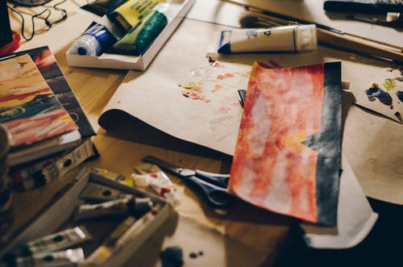

Sarah Coleman
Workshops


Tutored Arts and Crafts workshops I support self-expression and playfulness using a variety of materials, to enable people to relax and fully explore their creativeness. I encourage people to look and find inspiration from the natural world
- Specialising in person-centred arts projects with special needs groups and individuals
- 20 years’ experience of working within community arts settings on festivals and regeneration projects
- Teaching background with adults, children and families from all levels of ability on specific creative and educational projects
- Experienced Steiner craft teacher
- Crafts for Children
- Crafts for relaxation
- Disability arts
- Expressive Arts
- Figurative Painting
- 2D and 3D Mosaic
- Jewellery making
- Clay modelling
- Collage
- Drawing
- Silk painting
- Felt making
- Ceramic painting
- Fused glass jewellery
- Murals
- Card Making
- Mask making
- Lantern making